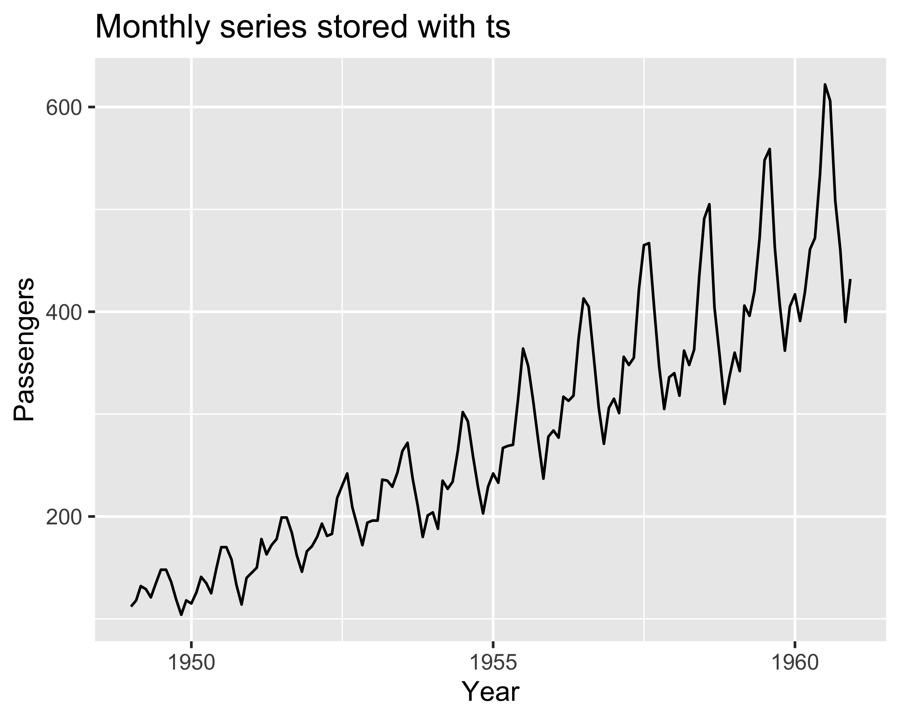

Time series of stochastic process variables
Multi-agent system for smart machining, part I-b
Paolo Bosetti
Time and timestamps
In a time series, each observation is paired with a time coordinate that gives order, spacing, and physical meaning to the data
The same physical instant can be stored in different ways: readable text, numeric offset from an epoch, or a native date-time object provided by the language or the operating system
Choosing the wrong representation can create ambiguities in time zone, resolution, clock drift, or query semantics
Storing time
Two common representations are used in practice:
- ISO8601 date-time string, for example
2026-03-09T08:15:30.125Z - Numeric offset from an epoch, for example seconds or milliseconds from a reference instant
ISO strings are readable, self-describing, and easy to exchange between systems, especially when they include time zone information
Epoch-based values are compact and fast for storage, sorting, and arithmetic, but they require agreement on the epoch, units, and time zone convention
In industrial applications, timestamps are often stored with millisecond resolution, although sensor acquisition may internally use finer clocks
Epoch conventions and clocks
An epoch is the reference instant from which a numeric timestamp is measured
Common conventions include:
- Unix epoch:
1970-01-01 00:00:00 UTC - GPS epoch:
1980-01-06 00:00:00 UTC - Other software-specific origins, used by spreadsheets, PLCs, or proprietary databases
If the epoch changes, the same numeric value refers to a different physical instant
Operating systems expose different clocks:
- System clock: returns civil time and can jump because of NTP, manual updates, or daylight-saving adjustments
- Monotonic clock: only increases and is used to measure elapsed time reliably
Therefore:
- use the system clock for timestamps attached to data
- use a monotonic clock for latency, timeout, and sampling-period measurements
Monotonic clock limitations
The monotonic clock is usually referenced to an internal origin that depends on the current operating-system session, typically the last boot time
Therefore, its zero is not a civil date and is generally different on each machine, even if the devices are nominally synchronized on the network
As a consequence, monotonic time is excellent for measuring:
- elapsed time
- latency
- timeout intervals
- local acquisition jitter
However, it cannot be used to synchronize measurements collected on different devices, because the timestamps do not share a common physical epoch
To align data acquired by multiple systems, one needs timestamps derived from a shared wall-clock reference, typically UTC, distributed for example by NTP, PTP, or GNSS
Time in R
R provides several complementary tools for time handling:
Date: stores calendar dates without time-of-dayPOSIXct: stores date-time as seconds from the Unix epochts: for regularly sampled series with known frequencyxts: for indexed time series, especially convenient for date-time filtering and irregular samplinglubridate: simplifies parsing, rounding, shifting, and extracting date-time components
The choice depends on whether time is regular, irregular, or mainly used for querying
Regular series with ts
The ts class is designed for regular sampling, such as monthly production, daily energy use, or hourly average demand
It does not store a full timestamp per sample. Instead, it stores:
- a start instant
- a frequency
- the ordered values
This is efficient and works very well with classical time-series models
Indexed series with xts
The xts class is more convenient when timestamps are explicit and may be irregular
Each observation is paired with a time index, typically Date or POSIXct
This is useful for:
- sensor logs
- event streams
- asynchronous acquisition
- filtering by calendar date or time window
Querying xts with date ranges
One of the strengths of xts is its compact indexing syntax
Examples:
- one day:
x["2026-03-09"] - one range:
x["2026-03-09/2026-03-10"] - from an instant onward:
x["2026-03-09 08:10:00/"] - up to an instant:
x["/2026-03-09 08:15:00"]
This is often faster to read and write than manual logical filtering
lubridate for parsing and filtering
lubridate helps create robust pipelines for date-time handling
Typical tasks include:
- parsing strings with
ymd_hms() - changing time zone with
with_tz()orforce_tz() - rounding with
floor_date()andceiling_date() - extracting fields such as
year(),month(),wday(),hour()
# A tibble: 6 × 4
timestamp value minute_bin hour
<dttm> <dbl> <dttm> <int>
1 2026-03-09 08:00:00 20 2026-03-09 08:00:00 8
2 2026-03-09 08:05:00 20.4 2026-03-09 08:00:00 8
3 2026-03-09 08:08:00 20.1 2026-03-09 08:00:00 8
4 2026-03-09 08:15:00 20.8 2026-03-09 08:10:00 8
5 2026-03-09 08:23:00 21.2 2026-03-09 08:20:00 8
6 2026-03-09 08:31:00 21 2026-03-09 08:30:00 8Note
This is especially useful before converting tabular data to xts
From data frame to xts
To work efficiently with time series in R, a common workflow is:
- import tabular data
- parse the
timestampcolumn asPOSIXct - sort by time
- convert to
xts - query and aggregate
sensor_tbl <- tibble(
timestamp = c("2026-03-09 08:00:00",
"2026-03-09 08:05:00",
"2026-03-09 08:08:00"),
temperature = c(20.0, 20.4, 20.1)
)
sensor_tbl2 <- sensor_tbl %>%
mutate(timestamp = ymd_hms(timestamp)) %>%
arrange(timestamp)
sensor_xts2 <- xts::xts(
x = sensor_tbl2$temperature,
order.by = sensor_tbl2$timestamp
)
sensor_xts2 [,1]
2026-03-09 08:00:00 20.0
2026-03-09 08:05:00 20.4
2026-03-09 08:08:00 20.1Time series in Python
Python offers libraries with roles similar to those seen in R:
datetime: basic date-time objects, time zones, timedeltaspandas: indexed time series, resampling, rolling windows, filtering by date rangenumpy: efficient numerical arrays and vectorized operationsstatsmodels: AR, MA, ARIMA, seasonal models, ACF and PACFpolars: fast tabular processing, useful before conversion to time-indexed dataxarray: labeled multi-dimensional arrays, useful for sensor grids and scientific data
In practice, pandas plays a role similar to a combination of data.frame, xts, and part of lubridate
Time series in Python
Typical workflow in Python:
- parse timestamps with
pd.to_datetime() - set the timestamp as index
- sort the index
- slice by date or time range
- resample or aggregate if needed
This is very close to the xts workflow in R
import pandas as pd
df = pd.DataFrame({
"timestamp": [
"2026-03-09T08:00:00Z",
"2026-03-09T08:05:00Z",
"2026-03-09T08:08:00Z"
],
"value": [20.0, 20.4, 20.1]
})
df["timestamp"] = pd.to_datetime(df["timestamp"], utc=True)
df = df.sort_values("timestamp")
df = df.set_index("timestamp")
window = df.loc["2026-03-09 08:00:00":"2026-03-09 08:06:00"]R and Python correspondence
Useful parallels are:
tsin R andstatsmodelsregular-series tools in Pythonxtsin R andpandaswithDatetimeIndexin Pythonlubridatein R andpandasdate-time accessors, plusdatetime, in Python
Note
The conceptual workflow is almost the same:
parse index filter resample model
Time-series queries in MongoDB
A common document structure for process data in MongoDB is:
The key point is that all documents share a timestamp field stored as an ISO date, typically with millisecond resolution
Querying a time range in MongoDB
{
"_id": {
"$oid": "698afb51c3b4084d840b9c85"
},
"timestamp": {
"$date": "2026-02-10T09:33:05.344Z"
},
"measure": {
"back_bend": -0.5168184041976929,
"back_flex": -1.20260488986969,
"back_rot": 1.749389410018921,
"cervical_flex": 17.3467960357666,
"horiz_reach_left": 0.20939064025878906,
"horiz_reach_right": 0.20467370748519897,
"hostname": "nuc3",
"stability_margin": 0.11027171462774277,
"timecode": 37985.2,
"vert_reach_left": 14.016213417053223,
"vert_reach_right": 10.769205093383789
}
}MongoDB query in JavaScript
MongoDB query in Python
from datetime import datetime, timezone
from pymongo import MongoClient
client = MongoClient("mongodb://localhost:27017")
db = client["plant"]
col = db["measurements"]
t0 = datetime(2026, 3, 9, 8, 0, 0, tzinfo=timezone.utc)
t1 = datetime(2026, 3, 9, 9, 0, 0, tzinfo=timezone.utc)
cursor = col.find(
{
"machine_id": "M01",
"timestamp": {"$gte": t0, "$lt": t1}
},
{
"_id": 0,
"machine_id": 1,
"timestamp": 1,
"temperature": 1,
"vibration": 1
}
).sort("timestamp", 1)
rows = list(cursor)MongoDB query in R
library(mongolite)
library(glue)
m <- mongo(collection = "measurements", db = "plant", url = "mongodb://localhost:27017")
t0 <- "2026-03-09T08:00:00.000Z"
t1 <- "2026-03-09T09:00:00.000Z"
query <- glue(
'{{
"machine_id": "M01",
"timestamp": {{
"$gte": {{"$date": "{t0}"}},
"$lt": {{"$date": "{t1}"}}
}}
}}'
)
fields <- '{"_id": 0, "machine_id": 1,
"timestamp": 1, "temperature": 1,
"vibration": 1}'
df <- m$find(query = query, fields = fields, sort = '{"timestamp": 1}')From MongoDB query to time series
Once the query result is available, the workflow is again the same:
- parse the returned
timestamp - sort rows by time
- convert to a time-indexed object
- analyze or visualize the selected window
Summary
- Time can be stored as readable ISO text or as numeric offset from an epoch
- Epoch convention, time zone, and clock type must be known to avoid semantic errors
- In R,
tsis convenient for regular series, whilextsis preferable for explicit timestamp indexing - In Python,
pandasprovides the closest workflow toxtsplus data-frame filtering - MongoDB range queries on ISO dates are naturally expressed with
$gteand$lt - Once data are extracted, the main tasks are always parse, index, filter, aggregate, and model
Exercises
Look at the exercise notebook for exercises on time-series data handling in R and MongoDB.